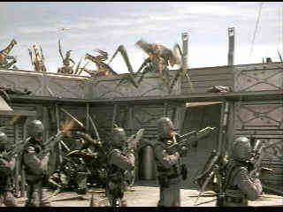

| Starship Troopers/A-,A |
| Columbia-Tristar/1997/144m/ANA,WS
2.35 |
A
great, modern, war movie, Starship Troopers, often skewers traditional genre conventions
going out of its way to depict war in the goriest screen images director Paul Verhoeven can
imagine. Opening on horrific war scenes as the Federal Republic is invading a bug planet, Starship
Troopers moves back in time a year to follow a group of Rio De Janeiro high school students
from graduation to their becoming soldiers for the Federal Empire. From the school party, it’s
direct to indoctrination and training and quickly on to war. Starship
Troopers moves with all the swiftness of an interstellar spaceship.
Starship Troopers may be foremost about war, but it's also about
political control, brainwashing, and the blind innocence of youth. And director Verhoeven has
control all right. His chosen stars Caspar Van Diem and Denise Richards are beautiful and bland,
lacking fire, but under total control by their director just as their characters are controlled by
the system and circumstances. Only Dina Meyer proves an exception to that rule in the role of
Dizzy. Meyer has a ample amount of presence and her screen spunk brings a life to her character
that others lack.
 |
|
The bugs attack a desert fort. ©Columbia Tristar
|
As a special effects extravaganza, Starship
Troopers blows would-be effects epics into a black hole. Consistently stunning, the computer
generated images of the bugs at war with man are convincing, and often disgusting. Verhoeven does miss a chance to exercise a fine sense of humor, yet he doesn’t litter the scenario with pithy one-liners. I love the propaganda spots on
the news. The device was used successfully by Verhoeven and writer Ed Neumeir previously in Robocop.
Starship Troopers adds a level of pleasure for film
aficionados in its references to genre films. The training sequence, albeit abbreviated, has fun
with conventions of the war genre. The demonstration of knife throwing is especially entertaining.
The campfire sequence is clearly evocative of the westerns of John Ford. The high tech fiddling
brings to mind many Ford folk dance sequences. And what about the outpost in the middle of the
desert; it's right out of Beau Geste.
Starship Troopers is one great bounty of a DVD, chuck full of
extras, and produced with the attention to detail that is a reflection of the dedication that went
in to making the film. The images are pristine is all their gory parts, detailing with retching
accuracy the blood and guts of war. The vivid colors are bright and accurate. Digital effects blend
splendidly with live action. Night scenes burst with snap and glitter. The Dolby 5:1 surround is
equally terrific, providing sonic blasts to accompany the vivid imagery.
|
|

The Feature Archive
has articles ranging from Akira
Kurosawa to Blonde Bimbos.
Movie Rage: Death in the Aisles
Everyone knows what it feels like to get angry at the
movies these days. Here's a humorous but not so delightful view of big screen misery.
 Brad Lang continues to add more interesting material to the extensive
collection at Classic
Movies. Everything from actors and actress to your favorite directors is
linked at the site. Brad Lang continues to add more interesting material to the extensive
collection at Classic
Movies. Everything from actors and actress to your favorite directors is
linked at the site.

News, information, features about current films in theaters and in the
pipeline. Easy to use interface.


DVDPlanet is the DVD
incarnation of legendary laser retailer Ken Crane's. Deep discounts and serious service.
Brad Lang continues to add more interesting material to the extensive
collection at Classic
Movies. Everything from actors and actress to your favorite directors is
linked at the site.

The DVD Forum is an international association of hardware
manufacturers, software firms and other users of Digital Versatile Discs (the "DVD
Format"), created for the purpose of exchanging and disseminating ideas and information about
the DVD Format and its technical capabilities, improvements and innovations.

The
Movie Poster Archive includes extensive poster images from the films of stars like Susan Hayward,
Kirk Douglas, Katharine Hepburn and many more. Our featured star is Doris Day.
|